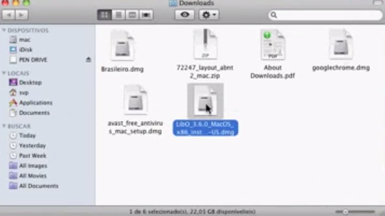
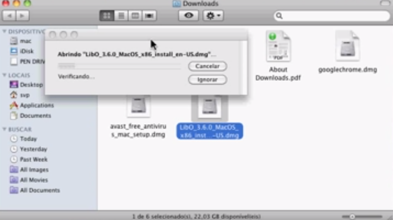
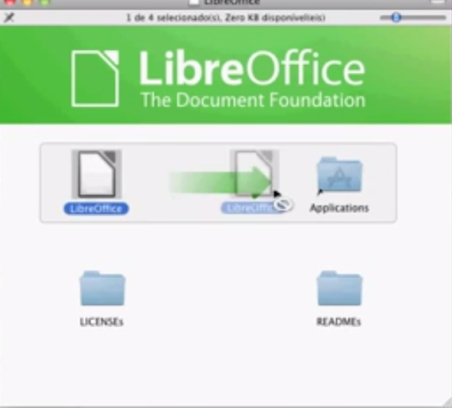
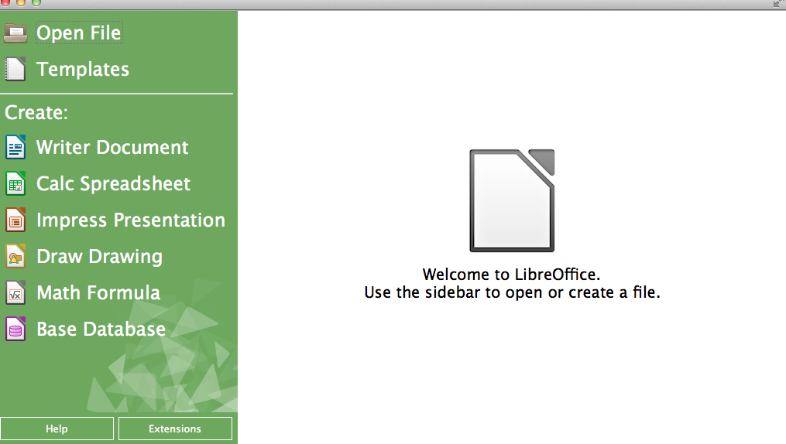

<article data-hd-class="task"> 
<h1>{{ page.title }}</h1> 
<p>Installing LibreOffice in your Mac IOS.</p> 

<section data-hd-class="task/prereq"> 
<h2>Pre-requisites</h2>  
<ul> 
<li>Download LibreOffice in your Mac</li> 
<li>1 Mac</li>
</ul> 
</section> 
<section data-hd-class="task/steps-informal"> 
<h2>Steps</h2>

<ol> 
<li>Find the download file name "LibreOffice_4.3.0_MacOS_x86-64"(figure 4)</li> 
<figure>
  
  <figcaption>Figure 4: </figcaption>
</figure>
<li>Click on the file and open it to begin Installation <em>(figure 5)</em></li>
<figure>
  
  <figcaption>Figure 5: Download file</figcaption>
</figure>
<li>Look at the LibreOffice window that opened</li>
<li>Select the LibreOffice file from the window and move it to Applications <em>(figure 6)</em></li>
<figure>
  
  <figcaption>Figure 6: LibreOffice window</figcaption>
</figure>
<li>Close the LibreOffice window</li>
</ol> 

</section>
<section data-hd-class="task/example">
<h2>Example</h2>
<p>Now LibreOffice should look like this when open <em>(Figure 7)</em></p>
<figure>
  
  <figcaption>Figure 7: Main picture </figcaption>
</figure>
</section>
</article>
